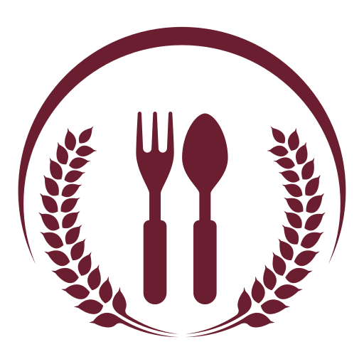
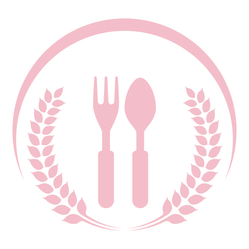

Ryż Carnaroli, karmelizowana gruszka, masło szałwiowe, parmezan dojrzewający.


Autorska kuchnia oparta na sezonowości i kunszcie zespołu.


Celebrujemy sztukę kuchni, łącząc elegancję tradycji z odrobiną nowoczesności. Nasz zespół wybiera wyłącznie najlepsze lokalne składniki, tworząc niezapomniane doznania smakowe.
Zapraszamy na wieczór, podczas którego każda potrawa opowiada własną historię — w towarzystwie wyselekcjonowanych win i ciepłej, gościnnej atmosfery.
Ryż Carnaroli, karmelizowana gruszka, masło szałwiowe, parmezan dojrzewający.

Pierś z kaczki wolno pieczona, redukcja z wina i fig, puree z topinamburu, grillowana cykoria.

Oliwa z pierwszego tłoczenia, kandyzowana pomarańcza, krem mascarpone z miodem lawendowym.
Każde danie było małym dziełem sztuki — doskonale zbalansowane, pełne smaku i zapadające w pamięć.
— Alex R.
Obsługa na najwyższym poziomie, a dobrane wina idealnie podkreślały smak każdego dania.
— Patrycja S.
Wyjątkowy klimat, subtelna muzyka i perfekcyjnie przygotowane dania sprawiły, że wieczór był niezapomniany.
— Michał K.
To miejsce zachwyca detalem — od eleganckiego wnętrza po dopracowane kompozycje smakowe na talerzu.
— Karolina W.
Masz pytanie o projekt? Wyślij wiadomość przez formularz lub skontaktuj się z nami bezpośrednio.
Przejdź do kontaktu